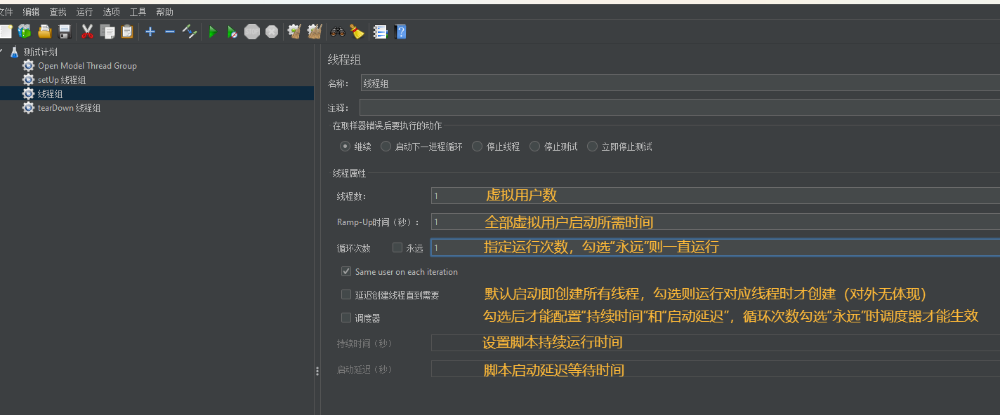
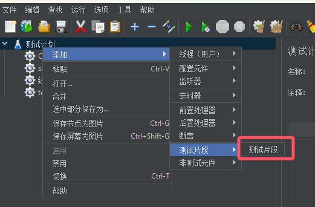

JMeter的执行顺序规则如下：
- 配置元件（Config elements）
- 前置处理器（Per-processors）
- 定时器（Timers）
- 采样器（Sampler）
- 后置处理器（Post-processors）
- 断言（Assertions）
- 监听器（Listeners）
1.线程组
1.1 线程组

在取样器错误后要执行的动作（当接口请求失败时，要执行的动作）
- 继续：继续执行接下来的操作
- 启动下一进程循环：忽略错误，执行下一个循环
- 停止线程：退出当前线程，不再执行此线程的任务操作
- 停止测试：等待当前执行的采样器结束，接着结束整个测试
- 立即停止测试：直接停止整个测试
线程数：模拟用户数量
Ramp-Up时间（秒）：达到指定线程数所需要的时间，防止对服务器有太大的负载。比如线程数为10，此处为5秒，10/5=2，那么相当于每秒启动2个线程，用时5秒达到10
循环次数：每个线程要循环的次数，如果勾选“永远”，会一直循环下去
Same user on each iteration：表示每个迭代都用相同的线程
默认值：默认是勾选
举例1：比如线程数为1，循环次数为5，那么创建好1个线程后，每次循环迭代都用这个线程，直到测试结束。如果不勾选，那么每次循环会销毁之前的线程，再创建1个新的线程，测试结束总共会经过5次创建销毁线程，浪费了计算机资源，线程多了甚至可能会影响性能测试结果，所以默认是勾选的
举例2：这1个线程中有登录操作，加入cookie后，这个线程5次迭代下来用的都是这一个cookie
延迟创建线程直到需要
勾选：当线程需要执行的时候才会被创建
不勾选：在计划开始的时候，所有的线程就都创建好
持续时间(秒)：表示多少秒后，结束测试
启动延迟(秒)：表示点击开始执行计划后，延迟多少秒，才真正开始执行
1.2 setUp 线程组
1.3 tearDown 线程组
1.4 Open Model Thread Group
2.配置元件
配置范围：测试计划、线程组、逻辑控制器、取样器
2.1 HTTP请求默认值
- 作用域：HTTP请求默认值的设置仅对同一层级及其下方的HTTP请求生效
- 优先级：如果HTTP请求中直接设置了与默认值相冲突的参数，将以请求中的设置为准
- 安全性：处理敏感信息（如认证信息）时，谨慎使用默认值，确保不会泄露到不安全的环境中
- 基本设置
- 协议：默认的通信协议，通常是http或https
- 服务器名称或IP：默认的服务器地址，所有使用此默认值的HTTP请求将指向该地址
- 端口号：默认的端口号，例如80或443
- 内容编码：指定发送请求时的内容编码方式，如UTF-8
- 路径：即接口，通常为空
- 高级设置：一般不用配置
2.2 HTTP信息头管理器
请求在发送时都会一般都会携带请求头信息，常见的包括请求的内容类型、token信息等，可添加HTTP信息头管理器统一管理
authorization：token类型 + token
Cookie与token区别：https://blog.csdn.net/qq_54247497/article/details/131443025
作用域：HTTP信息头管理器的设置仅对同一层级及其下方的HTTP请求生效
2.3 用户定义变量
定义和管理变量
一般仅设置测试计划中不需要随迭代发生改变的参数（只取一次值的参数）
多个 HTTP 请求存在重复的参数，把重复的参数提取出来，只需要定义一次即可
引用变量格式为：
${变量名}作用域：全局生效（作用于整个测试计划，包括跨线程组）
优先级：如果定义了相同的变量名，则取样器下的用户定义变量优先级最高
在启动运行时，获取一次值，运行过程中，值一直都不变
变量的值可以通过其他变量来引用，这样可以实现变量之间的关联和依赖关系
在多线程环境中，可以通过用户定义变量实现参数的传递和使用
2.4 计数器
- 计数器的作用域主要限定在其所在的线程组内。计数器仅对同一线程组内的所有采样器有效，能够确保每个虚拟用户（线程）在使用时都能获取到正确的计数值
- 作用域：计数器的设置仅对同一层级及其往下层级生效（测试计划》线程组》逻辑控制器》取样器）
2.5 JDBC Connection Configuration
Variable Name for created pool：数据库连接池的名称，可以设置多个 jdbc connection configuration，命名不同，在 jdbc request 请求中可以通过这个名称选择对应的连接池进行使用
Connection Pool Configuration：连接池参数配置，基本保持默认即可
- Max Number of Connections：连接池中最大连接数，在大多数情况下，**将其设置为零 (0)**。这意味着每个线程将获得自己的连接池，其中只有一个连接，即连接不在线程之间共享
- Max Wait (ms)：在连接池中取回连接最大等待时间，单位毫秒；连接时超过最大等待时间，则连接失败
- Time Between Eviction Runs (ms)：线程可空闲时间，单位毫秒；如果当前连接池中某个连接在空闲了 Time Between Eviction Runs Millis 时间后任然没有使用，则被关闭掉
- Auto Commit：自动 commit
- Transaction Isolation：事务隔离级别
- Pool Prepared Statements：每个连接池中预编译语句的最大数量。-1表示禁用池，0表示池中预编译语句的数量不受限制
- Preinit Pool：立即初始化连接池；如果为 False，则第一个 JDBC 请求的响应时间会较长，因为包含了连接池建立的时间
- Init SOL statements separated by new line：一组 SQL 语句，用于在首次创建物理连接时对其进行初始化。这些语句仅-当配置的连接工厂创建连接时执行一次
Connection Validation by Pool：验证连接池是否可响应，基本保持默认即可
- Test While Idle：当连接空闲时是否断开
- Soft Min Evictable Idle Time(ms)：连接在池中处于空闲状态的最短时间
- Validation Query：一个简单的查询，用于确定数据库是否仍在响应；默认为 jdbc 驱动程序的 isValid() 方法，适用于许多数据库（Test While Idle 需配置为 True）
Database Connection Configuration：数据库连接配置
Database URL：数据库连接 URL（格式：jdbc:mysql://IP:端口号/数据库名称）（jdbc:mysql://127.0.0.1:3306/test1?useUnicode=true&characterEncoding=utf8&useSSL=false）
JDBC Driver class：数据库驱动（选择对应的数据库驱动）
Username：数据库登录用户名
Password：数据库登录密码
Connection Properties：建立连接时要设置的连接属性（分号分割，也可以加在Database URL）（useUnicode=true;characterEncoding=utf8;useSSL=false）
在性能测试、自动化测试时，经常在准备测试数据、清理测试数据或者断言时，都会去操作数据库（增删改查），在jmeter中发起JDBC Request，而操作数据库（增删改查）之前，需要需要连接数据库，也就是需要先配置好 JDBC Connection Configuration
使用不同的数据库，需要引入不同的 jar 包，一共有两种方式
1.在测试计划底部添加 jar 包即可
2.将下好的 jar 包直接放到 jmeter 的 lib/ext 目录下，然后重新启动即可
作用域：JDBC Connection Configuration定义了一个变量，该变量在整个测试计划中都可以访问。这个变量代表了数据库的连接。可以在JDBC Request中使用这个变量来执行SQL语句

2.6 随机变量
2.7 CSV 数据文件设置
3.监听器
配置范围：测试计划、线程组、逻辑控制器、取样器
3.1 查看结果树
3.2 聚合报告
3.3 汇总报告
3.4 断言结果
3.5 响应时间图
3.6 汇总图
3.7 BeanShell 监听器
4.定时器
配置范围：测试计划、线程组、取样器
4.1 固定定时器
取样器：循环执行请求（取样器），暂停相同的时间（先执行取样器延时，再执行取样器请求）
取样器：执行请求（取样器）之前暂停设置的固定时间（先执行取样器延时，再执行取样器请求）
测试计划、线程组：其下的所有取样器暂停固定相同的时间
4.2 BeanShell 定时器
BeanShell定时器适用于需要动态调整延迟时间或者基于某些条件来决定延时时间的场景
4.3 同步定时器
目的是阻塞线程，直到 X 个线程被阻塞，然后它们被一次性释放（当需要进行大量用户的并发测试时，为了让用户能真正的同时执行，添加同步定时器，用户阻塞线程，知道线程数达到预先配置的数值，才开始执行取样器的操作）
可以在测试计划的各个点创建大量即时负载（集合点）
效果：多线程绝对并发
5.前置处理器
配置范围：测试计划、线程组、取样器
5.1 用户参数
5.2 BeanShell 预处理程序
5.3 取样器超时
设置的最大等待时间，如果在这个时间内未收到响应，取样器将标记该请求为超时错误（java.net.SocketException: Socket closed）
防止单个慢响应或无响应的取样器阻塞整个测试计划的执行
设置为0，表示永不超时
6.后置处理器
配置范围：测试计划、线程组、取样器
6.1 BeanShell 后置处理程序
6.2 JSON提取器
JSON提取器允许您使用JSON-PATH语法从JSON响应中提取数据
必须被放置为HTTP Sampler或任何其他有响应的采样器的子级

6.3 XPath提取器
7.断言
配置范围：测试计划、线程组、取样器
作用域：对同一层级及其往下层级生效（测试计划》线程组》逻辑控制器》取样器）
扩展：apply to（应用范围）
Main sample and sub-samples：主要样本和次级样本
Main sample only：仅主要样本
Sub-samples only：仅次级样本
JMeter Variable Name to use：jmeter变量(从指定变量中提取需要的值或者断言)
通常发出一个请求只触发一个请求，所以勾选“main sampie only”就可以
若发一个请求可以触发多个服务器请求，就有main sample 和sub-sample之分
7.1 响应断言
7.2 JSON断言
7.3 BeanShell断言
7.4 XML断言
XML 断言测试响应数据是否包含形式上正确的 XML 文档
7.5 HTML断言
7.6 XPath断言
7.7 XML Schema断言
7.8 断言持续时间
对请求响应时间的限制。如果响应时间超过设定的最大值，则断言失败
7.9 比较断言
7.10 大小断言
大小断言测试每个响应是否包含正确的字节数
空响应将被视为 0 字节，而不是报告为错误
7.11 JSR223 断言
8.测试片段
配置范围：测试计划、线程组

9.非测试元件
配置范围：测试计划

10.逻辑控制器
配置范围：线程组
10.1 循环控制器
10.2 简单控制器
11.取样器
11.1 HTTP请求
向 Web 服务器发送 HTTP/HTTPS 请求
11.1.1 基本配置
11.1.2 高级配置
11.2 JDBC Request
11.3 调试取样器
展示Jmeter属性、Jmeter变量和系统属性值
可在查看结果树查看值
Jmeter属性
Jmeter变量
系统属性
11.4 测试活动
12.测试计划
- 用户定义的变量：在测试计划上可以添加用户定义的变量，相当于是全局变量，一般添加一些系统常用的置，如果测试过程中想切换环境，切换配置,，一般不建议在测试计划上添加变量，因为不方便启用和禁用，一般是在配置元件中添加用户自定义变量组件
- 独立运行每个线程组：勾选后中，多个线程组时，等待前一个线程组执行完成后才开始下一个线程组；不勾选时，默认各线程组行、随机执行
- 主线程结束后运行tearDown线程组：在主线程因错误结束执行时，如果勾选此选项，会执行tearDown线程组；如果不勾选，就不会执行tearDown线程组
- 函数测试模式(functional Testing)：只有当你需要记录每个请求从服务器取得的数据到文件时才需要选择函数测试模式，选择这个选项很影响性能，在调试脚本的时候，可以开启，但是在压测数量时建议关闭
- 添加目录或jar包到ClassPath：需要调用的外部jar包可以在这里进行添加设置，如添加mysql.jar